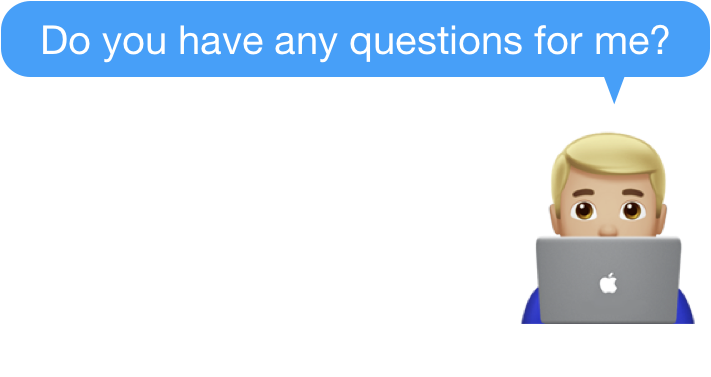

Do you have any questions for me?
What is the interviewer looking for:
On one side, the interviewer is giving you an opportunity to ask questions so that you have a better
understanding of the company. On the other hand, the interviewer is also going to form her opinion about how
excited you are with the company, based on the questions you have asked.

Best practice to answer:
You should think about two things here. One is to ask questions that you still have about the company and
the role. Just as the company is interviewing you, you are interviewing it as well. The other is to ask
questions that demonstrate your passion, knowledge and thought leadership in this space.
If you do not have questions or your questions are very superficial, it will be a clear indicator that you are not highly interested in the role, or you are not a curious person. Both cases are bad signs to an interviewer.
Below are some sample questions that can help you get started:
- I read the news that xxx is also starting a similar service. What is your take on their move?
- What big trends do you see in xxx space in the next 3 years?
- What 3-5 words will you use to describe the team’s culture?
- What are the biggest challenges that someone in this role will face?
- What does your day look like?
- How satisfied is the team with their career development?
Common pitfalls:
- No questions: this shows that you have not researched the company and the role properly, or you are not interested.
- Asking very generic questions that can be answered using Google search. This is a very precious moment for you to get meaningful information about the role. Please do not waste it.
- Ask too detail questions, such as benefits. This is not the time. You have plenty of time to ask about benefits after you get the offer.
Question variations:
- This is one question that everyone will ask :)